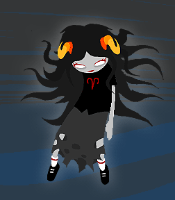

Oh, I really like Aradia too. She’s really pretty! And so mysterious. She plays everything close to the vest, doesn’t she?
The class element interests me. Apparently there’s a big divide between the upper class and lower class and a loooooot of animosity between them. I gather the upper class is called the blue bloods, and lower is green bloods? I wasn’t paying attention at first since blue blood is a standard term for the upper class. I guess Nepeta is a blue blood, but I don’t think I’ve gotten the names of anyone else. But aside from Nepeta they do seem like not the best people. Especially since AG is one of them. And AG is terrible.